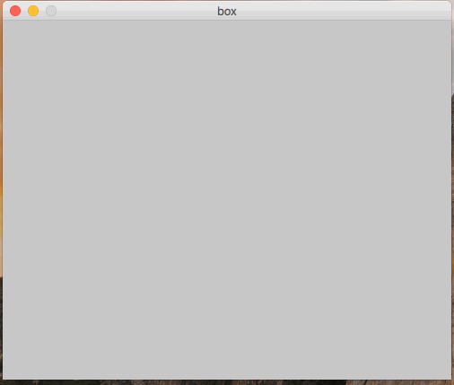
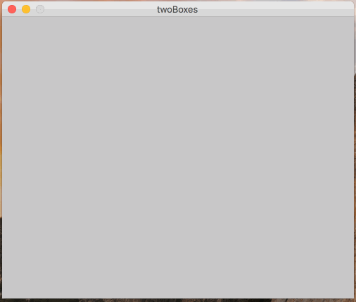
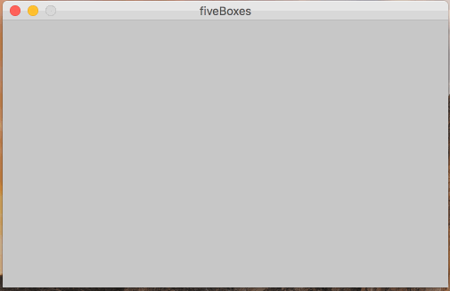
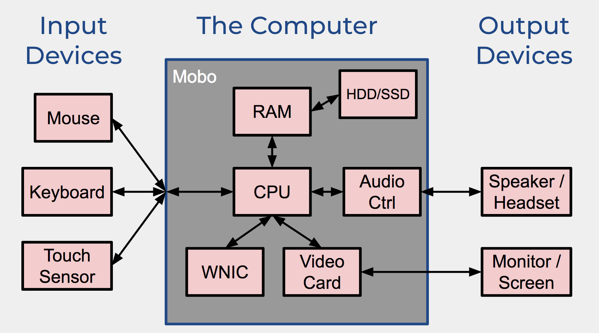

In this section, you’ll be writing several processing programs.
In the first one, you’ll be using processing to create a diagram of the major components of a computer. Recall that computers come in many form factors, but many of them have similar core components.
|  |
Create a processing program called box.pde.
This processing program should produce a canvas that looks like the one to the left.
The box does not need to repeatedly move across the screen - just once!
Recall: how do we make things move in processing?
|
|  |
Create a processing program called twoBoxes.pde.
This processing program should produce a canvas that looks like the one to the left.
Notice how it is similar to the last problem, but with two boxes!
You can copy/paste your solution for the last problem as a starting point.
|
|  |
Create a processing program called fiveBoxes.pde.
This processing program should produce a canvas that looks like the one to the left.
You should use a for-loop to repeat the 5 shapes.
|
|  |
Create a processing program called computer.pde.
This processing program should produce a static picture, which displays a diagram of all the major components of a computer (such as the one to the left).
A diagram like this can also be found int he class slides.
You don't need to match the color and font exactly, but the diagram should have all the same components.
Also, don't worry about drawing full arrows.
Just make them lines!
Also, you'll probably want to use the text() function!
|
You must turn in at least 2 problems to the D2L dropbox the dat of section!